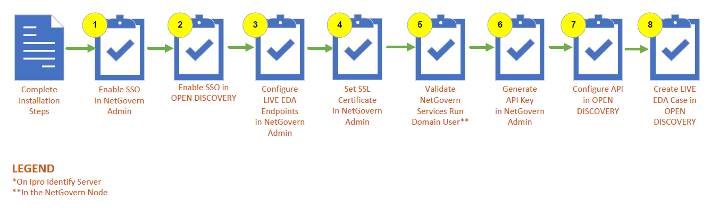

Warning: In addition to completing the configuration processes explained in this topic, you must complete the required configuration tasks in the
To successfully create and work in a
|
|
Warning: In addition to completing the configuration processes explained in this topic, you must complete the required configuration tasks in the |
This article outlines the tasks that must be completed to configure

First, implement SSO (Single Sign-On). You will be completing the tasks of an Administrator.
Open the
On the Services Home page, click the SSO tab.
From the SSO Type dropdown menu, select OpenID Connect.
In the Identity Provider URL field, enter the URL of the
Enable
Click

Configure the SSO settings for
Set up a remote connection to the
Go to the Identity Server installation folder.
Open the appsettings.json file: C:\Program Files\IPRO Tech\Web\Components\Identity\appsettings.json. This contains the redirects for the Identity Server.

Add a new client. Follow the example below. The SERVER_URL is the URL of the master archive node or client access node.

Save. Changes take effect immediately.
Configure the
Return to the
Navigate to the left-hand panel. Expand the Agents dropdown. Select
In the Configuration tab, complete the following steps:
Check the box Enabled. This will enable the
Enter the BaseUI. The BaseUI is the UI for
Enter the BaseAPI. The BaseAPI is the UI for
|
|
Note: Entering the BaseUI and BaseAPI will automatically populate URLs in the QueryProcessingCases, PromoteDocuments, CaseAccessValidation, and NavPermission fields. |
Click Save Changes.

To use
|
|
Note: An SSL certificate is required even if the environment is not exposing anything to the internet. In that case, however, it can be a self-signed certificate that is trusted by the |
For information about how to generate a key and configure a certificate, see Installing an External Certificate for LIVE EDA.
Navigate to the left-hand panel of the
Go to the Advanced tab and click Set Certificate.

The URL of the

Use an SSL certificate in PEM format. Copy and paste it into the relevant directory, or click Browse to find the file.
|
|
Note: If using the file browse method, you might be required to copy and paste the certificate chain and private key values in the correct directories, depending on the formatting of the certificate. |
Click Set Certificate to validate.
|
|
Warning: |
Once all services run on the same identity, you can start validation. When promoting a
During set up, you will need to provide
Open the
Open Windows Services.

Ensure that the Log On As account is set to the correct domain user for all following services. The selected user must be a local administrator.
Update the accounts. Right-click the service, go to Properties, and select the Log On As tab. Test the account that is going to have access to both the
When you have updated an account, restart the service.
Repeat the steps listed above for both the Default Master and the Worker nodes.
The
Super Admin permissions are required to complete the following steps.
Navigate to the left-hand panel of the
In the Configuration tab, click Generate to generate the API Key.

Copy and paste the API Key value in a note created in Notepad. Save.
|
|
Note: You can only generate the API Key once. It cannot be retrieved. If you lose it, you will need to return to this step, select Revoke and regenerate, and complete the steps in this section. |
You can configure the
Log in to  at the top-right corner of the screen.
at the top-right corner of the screen.

In the left-hand panel of the System Manager, select Environment Settings.
Scroll down to EDA Settings.
In Early Data Assessment Search Endpoint, enter the correct Search Endpoint. This is the URL the user navigates to in order to view the
In Early Data Assessment Environment Endpoint, enter the correct EDA API Endpoint. This is the URL of
In Early Data Assessment API Key, paste the API Key.
Click Save.

|
|
Note: You also have the option to configure environment settings during installation via the setup wizard. When prompted, enter the NetGovern Archive Web URL, NetGovern API URL and NetGovern API Key. |
Click Case Management
on the
Take one of the following actions as needed:
Click
 corresponding
to the needed managing client and click Edit
Managing Client.
corresponding
to the needed managing client and click Edit
Managing Client.
Click
corresponding
to the needed client and click Edit
Client.
Under Early Data Assessment Environment, deselect Use System Default.

Enter the desired Search Endpoint and API Endpoint for that client.
Click Save.
|
|
Note: You cannot configure the Early Data Assessment Search Endpoint when creating a new client, only by editing an existing client in the Case Manager. |
A
When the above has been completed, you must also complete the configuration steps required to make the external, live data sources accessible and searchable in your
Related Topics